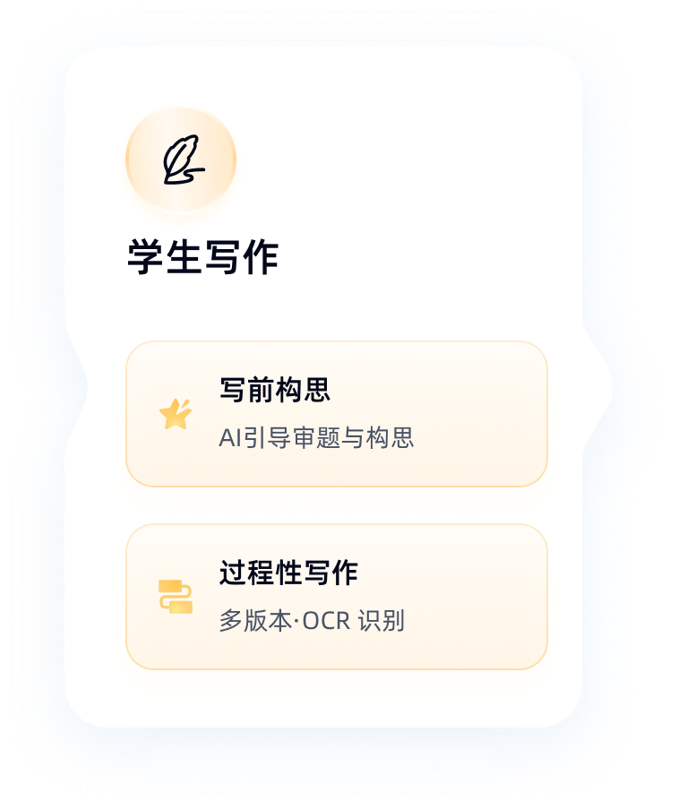
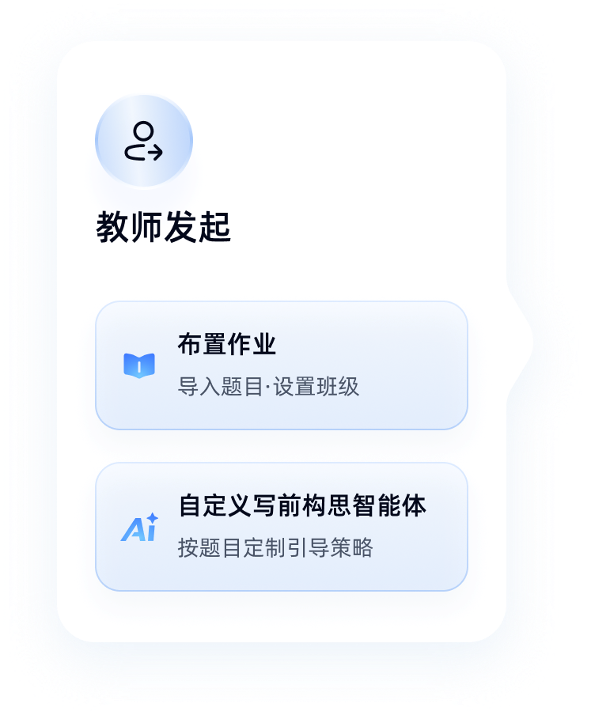

为什么 iwrite 把写作助手的开关交给教师？一套英语写作平台的设计哲学
从写作助手的开关设计切入，拆解 iwrite 如何在"辅助学习"与"能力培养"之间划出边界，以及这套班级体系背后的技术取舍。
你打开过几个英语写作软件，应该都有过类似的体验：写着写着蹦出个智能提示，告诉你这句话可以改得更地道；想不起来某个词，侧边栏的联想已经列好了一串候选。这些功能太贴心了——贴心到你可能会下意识地依赖它。
但 iwrite 不这么做。它的写作助手不是默认开启的。更准确地说，这个功能是否存在，由教师决定。一个日常训练型作业，教师可能开着助手让学生边写边查；一个考试模拟型作业，教师直接关掉，还原考场那种没有外援的真实压力。
为什么要把这个最常用的辅助功能的开关，设计成不由用户自己控制？去iwrite官网逛一圈就能明白——这背后藏着 iwrite 整套设计的出发点，它从一开始就不是给"自学者练笔"做的工具，而是一套给正规教学场景准备的写作训练体系。
教师即规则制定者：作业级的精细化控制
iwrite 的班级体系是理解它所有设计的钥匙。教师创建班级、发布作业，学生凭邀请码自助入班——这套"一次发码，全班自助"的入班流程本身就值得说两句。邀请码不是临时链接，而是绑定到班级的唯一凭证，历史班级的邀请码也不会过期失效，只是搜不到而已。这种设计让班级的生命周期和教师的教学节奏对齐，而不是跟某个工具的会话过期机制绑定。
回到写作助手。它只是 iwrite 做的"教师控制教学难度"这个思路的一个缩影。平台内置了三种作业类型：日常写作、互评作业、续写作业。其中续写作业只能在电脑端作答、手机微信端只能查看——这也是有意的设计，因为续写需要更长的思考时间和更稳定的输入环境，移动端那种碎片化、随时可能被打断的场景不适合。

把这些点串起来看，iwrite 不是在"做一个功能完备的写作软件"，而是在"给教师一套可以配置的教学工具箱"。工具本身不教育，教师用工具来教育——这是它跟很多同类产品最本质的区别。想亲自试试这套工具箱的话，安装包从官方下载拿就行。
机器评阅的四维拆解：反馈不是一个分数
你提交一篇作文，iwrite 立刻给出评分和批改报告。但它不只是给一个总分。后来去iwrite文档翻了一下才确认，文档里明确写了"四维反馈"——这四个字我第一次看到时以为是个营销话术，仔细想才明白这是技术架构层面的设计。
英语写作的机器评阅，行业里常见两种路线：一种是训练一个大模型直接输出分数，黑盒判断；另一种是先拆解成几个维度分别打分，再组合。iwrite 走的是后者。它把一篇作文拆成了至少四个独立评估维度（具体维度名文档里没写，但从"错误类型统计"和"客观特征分析"能推断出来），每个维度的算法可能都不一样——语法错误检测是规则匹配模型，词汇丰富度是 n-gram 对比，篇章结构可能用了 discourse analysis 的思路。
这种拆解的好处不只是评阅更准确。更大的价值在于可追溯的反馈。学生拿到的不是一个"67 分"，而是"你的词汇多样性比上次进步了，但冠词错误占比仍然偏高"。学习档案里的"错误类型统计"就是这些维度数据的汇总——某类错误占比居高不下，那就是下一步训练的靶心。
这也是为什么 iwrite 会同时提供"题库写作"和"自由写作"两种自主练习方式。题库按话题分类（议论文、说明文、图表作文……），学生可以定向刷弱项；自由写作则不限题目，专注保持写作手感。两种方式共用同一套评阅引擎，数据最终沉淀到同一份学习档案里。
班级体系的取舍：便利与控制的平衡
邀请码入班的设计看起来很朴素——教师发一串字符，学生输进去搜索加入。但这套机制背后的取舍比想象中多。
首先是便利 vs 精确性。让学生自助入班，教师不用逐个录入名单，这在大班教学场景下节省的时间是巨大的。但代价是什么？如果两个教师碰巧用了相似的班级命名，学生输错了邀请码会不会入错班？iwrite 的解决方案是：搜索结果里显示班级信息让学生确认，但邀请码本身保证唯一性——每个班级的邀请码是系统生成的、不重复的字符组合。
其次是历史班级的边界。学期结束了，班级要不要解散？iwrite 的做法是保留但不可搜索。教师仍然能在管理页看到历史班级的卡片，学生的学习档案也保留。这种"软归档"比硬删除更人性化——学生回顾自己一年前的写作记录时，不会发现数据凭空消失。

但这套班级体系也有它不适用的场景。如果你是一个想自己练英语写作的自学者，没有教师给你发邀请码，那 iwrite 对你来说可能太重了——你不需要班级管理，不需要互评环节，只需要一个能帮你改作文的工具。这时候更轻量的产品可能更合适。
写在最后：工具设计背后的用户画像
拆解到这里，iwrite 的用户画像已经很清晰了。它服务的不是"想练练英语写作的人"，而是"有明确教学目标的教师和有明确训练任务的学生"。所以它的每一个设计决策都在强化这个画像：
- 写作助手由教师开关 → 教师控制训练难度
- 三种作业类型 → 覆盖不同教学场景
- 机器评阅四维拆解 → 给教师和学生可操作的反馈
- 班级邀请码体系 → 降低大班教学的管理成本
- 学习档案 → 让训练效果可量化
这套设计在正规教学场景下是自洽的，但也有它的盲区。纯自学者可能觉得流程太重，教师如果不理解写作助手开关的意义（比如一直开着模拟考试的环境，反而让学生写不出东西），再好的设计也会被用歪。
iwrite 提供了一套很好的工具，但工具能发挥多大价值，最终还是取决于使用它的人怎么用。这套工具的资料我顺手同步到了三个仓库：GitHub 上有完整的项目备份，Gitee 和 GitCode 主要是为了国内访问更方便，两边内容保持同步更新。